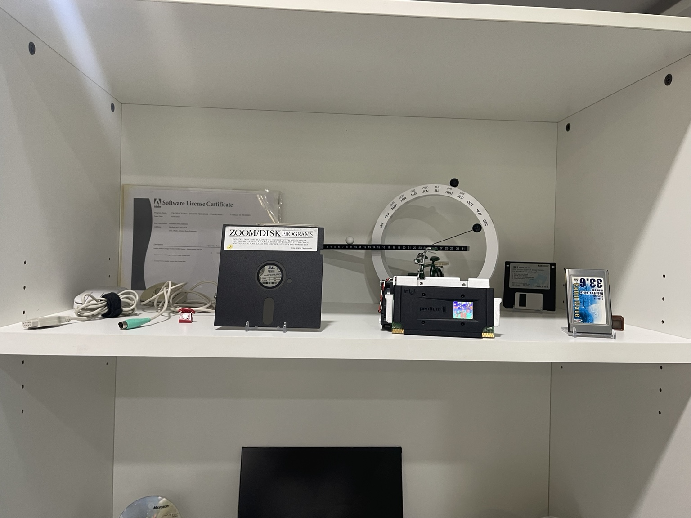
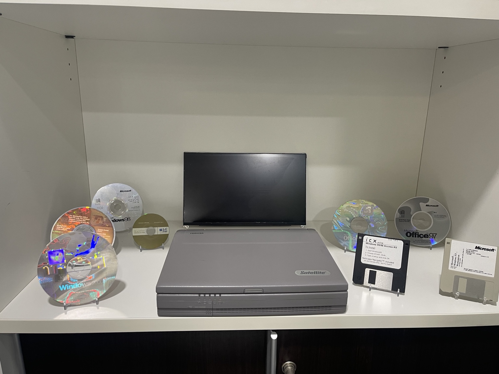

01
Software & processors
A diverse collection of vintage storage media, processors, and operating systems.
Loading experience...
0%An interactive journey through technology history 1940-2026
Explore a rare collection of vintage software, processors, disks, and computers with 3D technology.

Explore the displays
Tap the glowing hotspots to discover each item.

A diverse collection of vintage storage media, processors, and operating systems.
A Toshiba Satellite surrounded by historic Microsoft releases.
A brief timeline 1940-2026
The beginning of the modern computing era with the first computers.
3D Experience
Drag the 3D model to rotate, use mouse wheel or pinch to zoom.
Intel Pentium II
1997
Sounds of the past
Relive the memories with the most iconic computer sounds from the 90s.
The classic 90s internet connection sound
The iconic Windows XP startup sound
The Windows 98 shutdown sound
The classic Windows error sound
Visitor experience
Open full-size images.
Each hotspot reveals a story.
View artifacts in 3D.
Arabic and English in one tap.
Test your knowledge